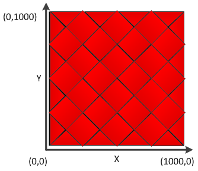

The desired resolution parameters specifies the resolution of the position that is calculated by the trackpad processing algorithm. The trackpad is a two-dimensional sensor that reports back an x-position and y-position. When selecting a resolution, the value reported back for the position will be in the range of 0 to (resolution-1). For example, if a resolution of 1000 is selected, the values will range from 0 to 999 (1000 total points of interest).

Implementation Notes
While resolutions up to 16-bit are supported by the algorithm, the default resolution is 1000 points. Select a resolution that
is appropriate for the application.
Range of Valid Values for the Desired Resolution Parameter
The desired resolution may be set from 2 to 65535.
Affected Software Parameters
The Desired_Resolution parameters corresponds to the
ui16Resolution_X
and
ui16Resolution_Y
members of the
tTrackPadSensorParams
types in the CapTIvate Touch Library.